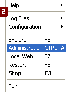

Install EasyPHP
- Download EasyPHP from the website www.easyphp.org
- double-click on the downloaded executable
- select an installation directory and follow the instructions
Run EasyPHP
 We are not really running EasyPHP as such: we are really a starting up Apache and MySQL. After installation, a short cut to EasyPHP is created in the directory "Start/Programs/EasyPHP". When EasyPHP is launched, an icon appears beside the clock [1].
A right-click gives access to various menus [2]:- Help: help on EasyPHP
- Log Files: record errors generated by Apache, MySQL and EasyPHP
- Configuration: gives access to various configuration tools
- Explorer: open the directory "localweb" in Windows Explorer
- Administration : opens the administration page
- Web local : opens local web
- Restart : restarts Apache and MySQL
- Start/Stop : Starts/Stops Apache and MySQL
- Quit : closes EasyPHP
Use the directory "localweb" or an alias
You must place your files either in the directory "localweb" or an alias that you have created, so that PHP can interpret your PHP pages. To view your pages, select "local Web" or an Alias on the "Administration" page.
Your first PHP page
There are many ways to program in PHP and there are many suitable text editors (eg specialized for HTML or PHP with syntax highlighting etc). In this example we will use a simple text editor.
 Open a new file.
Open a new file.
Type the structure of an HTML page.
<head>
<title>My first page in PHP.</title>
</head>
<body>
</body>
</html>
<head>
<title>My first page in PHP.</title>
</head>
<body>
Current date : <?php print(date("l F d, Y")); ?>
</body>
</html>
Saving the page.
Create a new directory in the directory "localweb" (or in an alias). Save your first PHP page there giving it the following extension: .php
Make sure, in the screen options of Windows, that the extensions of the files whose type is known are visible.
See the result.
* DO NOT DO THIS: in Windows Explorer go to the directory "localweb" (or the directory of an alias) then the directory corresponding to your project and double-click on your example file. You will get an error message.
*DO THIS : Launch EasyPHP, open "local Web", select your work directory (or an alias) then click on "date.php". You will see a web page which will shows the current date; for example: "current Date: Wednesday March 22, 2013".
It is now up to you to create your own PHP pages.